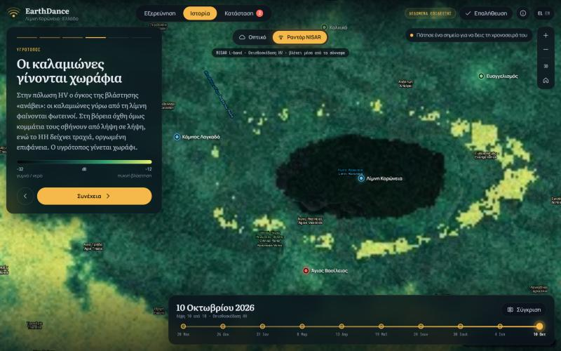
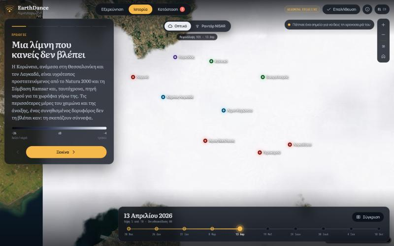
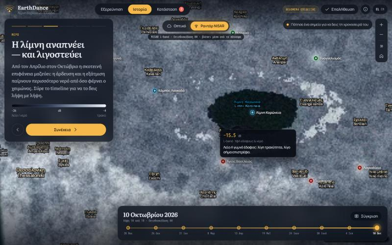
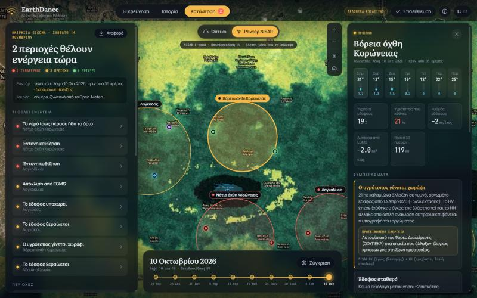
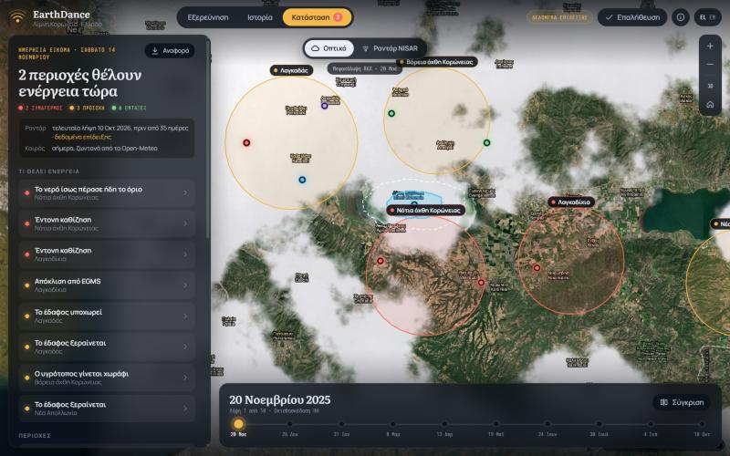
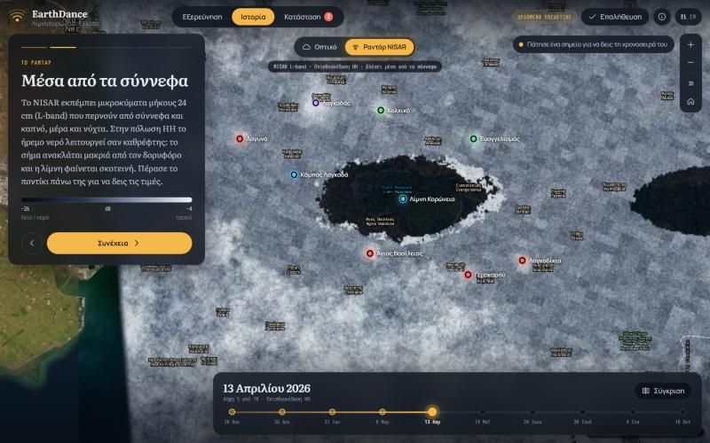

Τι πρόβλημα λύνουμε για την Περιφέρεια, πώς χρησιμοποιούμε τα δεδομένα του NISAR, και το demo των 3½ λεπτών κλικ προς κλικ, για να το μάθει όλη η ομάδα απ' έξω.

Η Περιφέρεια δεν μπορεί να προστατέψει τη Λίμνη Κορώνεια, γιατί τις περισσότερες μέρες δεν τη βλέπει. Το EarthDance παίρνει το ραντάρ του NISAR, που βλέπει μέσα από τα σύννεφα, και το κάνει καθημερινή εικόνα με ειδοποιήσεις και προτεινόμενες ενέργειες, πριν το νερό πέσει κάτω από το όριο.
Οι κριτές βλέπουν δεκάδες «χάρτες με πριν και μετά». Εμείς δείχνουμε τρία πράγματα που οι περισσότεροι παραλείπουν:
| Τι δείχνουμε | Γιατί μετράει | Κριτήριο Space Apps |
|---|---|---|
| Μετάφραση της φυσικής | Κάθε χρώμα στον χάρτη εξηγείται: πέρνα το ποντίκι και η εφαρμογή λέει τι τιμή μετρά το ραντάρ και γιατί (καθρέφτης του νερού, διπλή ανάκλαση στα καλάμια, όγκος βλάστησης, διηλεκτρική σταθερά). | Εγκυρότητα, συνάφεια |
| Από το «τι έγινε» στο «τι κάνουμε» | Η «Κατάσταση» λέει ποιες περιοχές θέλουν ενέργεια σήμερα, προτείνει ενέργεια, κάνει σενάρια και βγάζει αναφορά για τον Αντιπεριφερειάρχη. | Επίδραση |
| Ειλικρίνεια | Συγκρίνουμε το NISAR με ανεξάρτητη μέτρηση (EGMS), δείχνουμε πού διαφωνούν και γράφουμε «τι δεν μπορούμε να πούμε». | Εγκυρότητα |
| Ο «χορός» | Timeline, σύγκριση με μπάρα και ήχος (η χρονοσειρά γίνεται μελωδία): η λίμνη «αναπνέει» στην οθόνη. | Δημιουργικότητα, παρουσίαση |
Από τον Νοέμβριο 2025 ως τον Μάρτιο 2026, σε 87 από τις 151 ημέρες (58%) η μέση νεφοκάλυψη πάνω από την Κορώνεια ήταν 60% ή περισσότερο. Σε όλο το έτος (Νοέ. 2025 – Οκτ. 2026): 142 από 365 ημέρες (39%).
Πηγή: Open-Meteo, ημερήσια μέση νεφοκάλυψη (επανανάλυση), σημείο 40,683° Β, 23,15° Α. Είναι μοντέλο, όχι μέτρηση σταθμού· να το λέτε «σύμφωνα με τα δεδομένα επανανάλυσης». Το ίδιο νούμερο υπολογίζεται ξανά με `tools/fetch_weather.py` αν θέλετε φρέσκο.
Το challenge λέγεται Dancing with the SARs και ζητά να φανεί ο «χορός» της επιφάνειας. Το όνομα το δένει αμέσως με το θέμα και δεν κλειδώνει την εφαρμογή σε μία λίμνη: η ίδια εφαρμογή δουλεύει για οποιαδήποτε περιοχή αλλάζοντας ένα αρχείο.
Κάθε γραμμή του πίνακα είναι κάτι που υπάρχει ήδη στην εφαρμογή. Στο pitch λέμε το πρόβλημα με λέξεις της Περιφέρειας, όχι της φυσικής.
| Πρόβλημα | Τι μετρά το NISAR | Τι κάνει η εφαρμογή | Ποιος το χρησιμοποιεί |
|---|---|---|---|
| Η λίμνη αδειάζει· κίνδυνος προστίμου | Το ήρεμο νερό είναι σκοτεινό στο HH → έκταση νερού σε κάθε πέρασμα, μέσα από σύννεφα | Απόθεμα έναντι ορίου, πρόβλεψη πότε περνιέται, ειδοποίηση «για αποφυγή προστίμου» 45 ημέρες νωρίτερα, σενάριο βροχής/άρδευσης | Διεύθυνση Υδάτων, ΤΟΕΒ |
| Ο υγρότοπος γίνεται χωράφι | HV = όγκος βλάστησης (καλαμιώνες φωτεινοί). Όργωμα: HV πέφτει, HH γίνεται «τραχύ» | Εκτάρια που χάθηκαν, πού και από πότε, πρόταση για αυτοψία | Φορέας Διαχείρισης (ΟΦΥΠΕΚΑ) |
| Η γη βυθίζεται από την υπεράντληση | InSAR (GUNW): κίνηση εδάφους σε χιλιοστά· γρηγορότερη το καλοκαίρι = άντληση | Ρυθμός ανά περιοχή, έλεγχος με EGMS, όγκος υπόγειου νερού που χάθηκε, πρόταση ελέγχου γεωτρήσεων | Περιφέρεια, Δήμοι, ΤΟΕΒ |
| Ξηρασία και σπατάλη στην άρδευση | Υγρασία εδάφους από τη διηλεκτρική σταθερά | Ποιες ζώνες είναι πιο ξερές από τις άλλες· πρόταση άρδευσης με μέτρηση αντί για ωράριο | Αγρότες, ΤΟΕΒ |
| Κακοκαιρία, πλημμύρες | Βλέπει μέρα–νύχτα, μέσα από σύννεφα· νερό εκεί που δεν υπήρχε | Ζωντανός καιρός και πρόγνωση 7 ημερών ανά περιοχή, ειδοποίηση ισχυρής βροχής, ιστορικό «ακραίο φαινόμενο → τι είδε το ραντάρ» | Πολιτική Προστασία |
| Δεδομένα | Τι μετρά | Πού φαίνεται στην εφαρμογή |
|---|---|---|
| NISAR L2 GCOV L-band · HH, HV | Οπισθοσκέδαση: πόση ενέργεια επιστρέφει, σε dB | Επίπεδα HH, HV, «Αλλαγή από την αρχή», έκταση νερού, καλαμιώνες, τιμή κάτω από τον κέρσορα |
| NISAR L2 GUNW InSAR | Φάση μεταξύ δύο περασμάτων → μετατόπιση: mm = φάση × 238,4 / (4π) | Επίπεδο «Μετατόπιση εδάφους», χρονοσειρές σημείων, ρυθμός ανά περιοχή |
| NISAR υγρασία εδάφους L3 | Νερό στο έδαφος (% όγκου) από τη διηλεκτρική σταθερά | Επίπεδο «Υγρασία εδάφους», δείκτης ανά περιοχή (ελέγξτε το ακριβές όνομα προϊόντος στο ASF) |
| Sentinel-1 RTC C-band · OPERA / NASA JPL | Το ίδιο τοπίο σε μήκος κύματος 5,6 cm | Σύγκριση L με C: το L-band περνά μέσα από τη βλάστηση, το C-band όχι |
| EGMS Copernicus | Ανεξάρτητη μέτρηση κίνησης εδάφους | «Επαλήθευση» (R², RMSE), «Συμφωνεί με EGMS ✓» σε κάθε σημείο και περιοχή |
| Open-Meteo ERA5 / ECMWF | Βροχή, θερμοκρασία, εξατμισοδιαπνοή, νεφοκάλυψη, πρόγνωση | Καιρός ανά περιοχή, ισοζύγιο νερού, νεφοκάλυψη της «Οπτικής» προβολής |
Τα NISAR κατεβαίνουν από το ASF DAAC (search.asf.alaska.edu ή με το πακέτο Python asf_search), με δωρεάν λογαριασμό NASA Earthdata. Το tools/add_layer.py βάζει κάθε λήψη στην εφαρμογή.
Όχι ξενάγηση στα μενού. Ένας μιλάει, ένας κάνει τα κλικ. Κάθε πράξη έχει μία ιδέα. Ξεκινάτε με την εφαρμογή ήδη ανοιχτή, σε πλήρη οθόνη (F11), στην «Ιστορία», στο πρώτο κεφάλαιο.
Οι αριθμοί σε κόκκινο είναι από τα δεδομένα επίδειξης. Όταν μπουν πραγματικά δεδομένα θα αλλάξουν: τότε διαβάστε τους από την οθόνη και διορθώστε τους εδώ.





Μια συμβουλή που κυκλοφορεί είναι «μην αναφέρετε ότι τα δεδομένα είναι ψεύτικα». Δεν συμφωνούμε. Η εφαρμογή γράφει μόνη της «Δεδομένα επίδειξης», το Space Apps βαθμολογεί την εγκυρότητα, και ένας κριτής που το ανακαλύπτει μόνος του θα αμφισβητήσει όλα τα υπόλοιπα. Η ειλικρίνεια είναι ήδη το δυνατό μας σημείο (EGMS, «τι δεν μπορούμε να πούμε»).
«Όλα όσα βλέπετε τρέχουν πάνω σε συνθετικά δεδομένα που ακολουθούν τη φυσική του L-band, ώστε να στήσουμε όλη τη διαδρομή από το σήμα ως την απόφαση. Ο καιρός είναι πραγματικός, από σήμερα. Τα πραγματικά προϊόντα NISAR GCOV και GUNW από το ASF μπαίνουν με ένα εργαλείο, χωρίς αλλαγή στον κώδικα.»
Αν μέχρι την παρουσίαση μπουν πραγματικές λήψεις NISAR, η ένδειξη φεύγει μόνη της και αυτή η πρόταση γίνεται «όλα όσα βλέπετε είναι πραγματικά».
Ο καιρός και η νεφοκάλυψη ναι. Το ραντάρ είναι συνθετικό, φτιαγμένο με τιμές που ακολουθούν τη φυσική του L-band, για να στηθεί όλη η αλυσίδα. Τα πραγματικά GCOV/GUNW από το ASF μπαίνουν με το add_layer.py και τότε η ένδειξη «επίδειξη» φεύγει μόνη της.
Τρεις τρόποι: σύγκριση με την ανεξάρτητη EGMS (R², RMSE, και ✓/✗ ανά περιοχή), κανόνες με κατώφλια που φαίνονται στην οθόνη («Πώς βγαίνουν τα συμπεράσματα»), και η λίστα «Τι δεν μπορούμε να πούμε». Δεν υπάρχει μαύρο κουτί.
Το L-band (24 cm) περνά μέσα από τη βλάστηση και κρατά τη συνοχή στα χωράφια, άρα το InSAR δουλεύει εκεί που το C-band χάνεται. Βλέπει και το νερό κάτω από τα καλάμια (διπλή ανάκλαση). Το δείχνουμε δίπλα δίπλα: επίπεδο Sentinel-1 VV.
Ο καιρός και η πρόγνωση καθημερινά, ζωντανά. Το ραντάρ σε κάθε νέο πέρασμα (περίπου κάθε 12 ημέρες), μόλις δημοσιευτεί το προϊόν. Η εφαρμογή γράφει πάντα «τελευταία λήψη πριν από Χ ημέρες».
Στατική σελίδα χωρίς server, δωρεάν δεδομένα. Η συντήρηση είναι ένα script που προσθέτει κάθε νέα λήψη. Μπορεί να το τρέχει ένας τεχνικός της Περιφέρειας ή μια αυτόματη εργασία.
Απόθεμα: έκταση νερού από το ραντάρ × καμπύλη στάθμης–όγκου της λίμνης. Εκτάρια: pixel της ζώνης υγροτόπου όπου το HV έπεσε και το HH έγινε τραχύ, × εμβαδόν pixel. Όγκος υπόγειου νερού: βύθιση × έκταση, ως κατώτατη ένδειξη.
[Συμπληρώστε πριν από την παρουσίαση] Από το Σχέδιο Διαχείρισης Λεκανών Απορροής του Υδατικού Διαμερίσματος Κεντρικής Μακεδονίας και την Οδηγία-Πλαίσιο για τα Νερά (2000/60/ΕΚ). Στο demo το όριο είναι ενδεικτικό και αλλάζει σε ένα αρχείο.
Ναι. Η περιοχή, τα σημεία και οι ζώνες ορίζονται σε αρχεία δεδομένων. Κερκίνη, Κάρλα ή Βόλβη είναι αλλαγή δεδομένων, όχι κώδικα.
Απλό ισοζύγιο φτιαγμένο από τις ίδιες τις μετρήσεις: ο χειμώνας γεμίζει τη λίμνη ανάλογα με τη βροχή, το καλοκαίρι την αδειάζει (70% άρδευση, 30% εξάτμιση). Δείχνει κατεύθυνση και μέγεθος, δεν είναι υδρολογικό μοντέλο. Το λέει και η ίδια η εφαρμογή.
Ναι, για κώδικα και κείμενα, και το δηλώνουμε στο «Σχετικά» και στο README. Η ομάδα έλεγξε, έτρεξε και είναι υπεύθυνη για τα δεδομένα και τα συμπεράσματα.
| Ρόλος | Ευθύνη | Όνομα |
|---|---|---|
| Ομιλητής | Λέει το σενάριο. Μαθαίνει απ' έξω το άνοιγμα και το κλείσιμο. | [ ] |
| Οδηγός | Κάνει τα κλικ. Ξέρει τη σειρά και το εφεδρικό βίντεο. | [ ] |
| Επιστήμονας | Απαντά στις ερωτήσεις φυσικής και δεδομένων (ενότητες 3 και 6). | [ ] |
| Δεδομένα | Κατεβάζει πραγματικά NISAR/EGMS και τα περνά με τα εργαλεία. | [ ] |
add_layer.py).validation.json.regions.json (από το Σχέδιο Διαχείρισης).content.json («Σχετικά»).voices.python tools/fetch_weather.py το πρωί (αντίγραφο καιρού αν πέσει το internet).Μία φράση για όλους: «Το NISAR βλέπει μέσα από τα σύννεφα· το EarthDance το κάνει απόφαση για την Περιφέρεια, πριν από το όριο και όχι μετά».
EarthDance · NASA Space Apps Challenge 2026. Δεδομένα: NISAR (NASA/ISRO, ASF DAAC), Sentinel-1 (ESA/Copernicus, OPERA), EGMS (Copernicus), Open-Meteo (ERA5/ECMWF). Οι εικόνες είναι από την εφαρμογή με δεδομένα επίδειξης. Ο οδηγός γράφτηκε με τη βοήθεια του Claude (Anthropic).